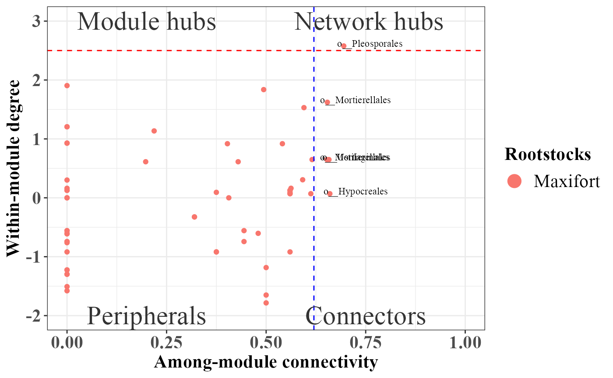

PhONA: Phenotype-OTU based Network Analyses
Ravin Poudel
2020-09-16
PhONA.RmdIntroduction
PhONA provides a framework to select a testable and manageable number of OTUs to support microbiome-based agriculture.
# installation # library(devtools) # devtools::install_github("ravinpoudel/PhONA", build_vignettes = TRUE, force = TRUE, auth = "5c5decd148f0378dcb762e7b14c3d1508ef49ba2") # Browse Vignettes to see the output as below. # browseVignettes("PhONA")
###### Load the data phyobj <- readRDS(system.file("extdata", "physeqobject.rds", package = "PhONA")) sparcc.cor <- read.delim(system.file("extdata", "cor_sparcc.out", package = "PhONA"), sep = "\t", header = T, row.names = 1) sparcc.pval <- read.delim(system.file("extdata", "pvals.txt", package = "PhONA"), sep = "\t", header = T, row.names = 1)
## Assign color to the taxa on the whole phyloseq object so that the same color is assigned for a taxon across treatments phyobj = taxacolor(phyobj = phyobj, coloredby = "Phylum")
example_lm <- PhONA( physeqobj = phyobj, cordata = sparcc.cor, pdata = sparcc.pval, model = "lm", iters=1, OTU_OTU_pvalue = 0.05, OTU_OTU_rvalue = 0.5, OTU_Phenotype_pvalue = 0.6, definePhenotype = "Marketable", defineTreatment = "Maxifort", PhenoNodecolor = "yellow", PhenoNodesize = 20, PhenoNodelabel = "Yield", nodesize = 10, Pheno2OTUedgecolor = "black", netlayout = layout.fruchterman.reingold )
## Total number of iterations used: 1
Summary of the graph
kable(summarizePhONA(example_lm$phona_graph, example_lm$roles))
| node | edge | nodeDegree | avgpath | trans | mod | connectance | wtc | nModules.SA | top3hub | top3hubv | n_postiveL | n_negativeL |
|---|---|---|---|---|---|---|---|---|---|---|---|---|
| 235 | 1019 | 4.336 | 1.963 | 0.773 | 0.314 | 0.018 | 30 | 6 | 1;17;36 | 1;0.578;0.56 | 496 | 289 |
Role analyses using SA algorithm implemented in rnetcarto package.
example_lm_roles <- example_lm$role ggplot(example_lm_roles, aes(participation,connectivity,label=name)) + geom_point(aes(colour = factor(Treatment)))+ scale_size(guide = 'none')+ scale_color_manual(breaks= c("Nongraft", "Selfgraft", "RST-04-106", "Maxifort"),values = c("mediumaquamarine","sienna4","#ffae19","blueviolet"))+ geom_text(aes(label=ifelse(role!="Peripheral",as.character(Order),'')),hjust=0.1,vjust=0.1,size=3,color="black",family="Times New Roman")+ geom_hline(yintercept=2.5, linetype="dashed", color = "red")+ geom_vline(xintercept = 0.62, linetype="dashed",color = "blue")+ annotate("text", x = 0.2, y = 3, label = "Module hubs",color="gray20",size=8,family="Times New Roman")+ annotate("text", x = 0.75, y = 3, label = " Network hubs",color="gray20",size=8,family="Times New Roman")+ annotate("text", x = 0.2, y = -2, label = "Peripherals",color="gray20",size=8,family="Times New Roman")+ annotate("text", x = 0.75, y = -2, label = "Connectors",color="gray20",size=8,family="Times New Roman")+ labs(x = "Among-module connectivity", y = "Within-module degree", col="Rootstocks") + theme_bw() + scale_x_continuous(limits = c(0, 1.0))+ theme(axis.text=element_text(size=16,face="bold",family="Times New Roman"),axis.title=element_text(size=16,face="bold",family="Times New Roman"))+ labs(fill = "Dose (mg)") + theme(legend.title=element_text(size=16,face="bold",family="Times New Roman"), legend.text=element_text(size=16,family="Times New Roman")) + guides(color = guide_legend(override.aes = list(size=5)))
library(PhONA) example_lasso <- PhONA( physeqobj = phyobj, cordata = sparcc.cor, pdata = sparcc.pval, model = "lasso", iters=2, OTU_OTU_pvalue = 0.001, OTU_OTU_rvalue = 0.6, OTU_Phenotype_pvalue = 0.6, definePhenotype = "Marketable", defineTreatment = "Maxifort", PhenoNodecolor = "yellow", PhenoNodesize = 20, PhenoNodelabel = "Yield", nodesize = 10, Pheno2OTUedgecolor = "black", netlayout = layout.fruchterman.reingold )
## Total number of iterations used: 2Summary of the graph
kable(summarizePhONA(example_lasso$phona_graph, example_lasso$roles))
| node | edge | nodeDegree | avgpath | trans | mod | connectance | wtc | nModules.SA | top3hub | top3hubv | n_postiveL | n_negativeL |
|---|---|---|---|---|---|---|---|---|---|---|---|---|
| 61 | 182 | 2.984 | 2.958 | 0.596 | 0.364 | 0.049 | 8 | 7 | 38;23;24 | 1;0.932;0.897 | 107 | 69 |
example_lasso_roles <- example_lasso$role ggplot(example_lasso_roles, aes(participation,connectivity,label=name)) + geom_point(aes(colour = factor(Treatment)))+ scale_size(guide = 'none')+ scale_color_manual(breaks= c("Nongraft", "Selfgraft", "RST-04-106", "Maxifort"),values = c("mediumaquamarine","sienna4","#ffae19","blueviolet"))+ geom_text(aes(label=ifelse(role!="Peripheral",as.character(Order),'')),hjust=0.1,vjust=0.1,size=3,color="black",family="Times New Roman")+ geom_hline(yintercept=2.5, linetype="dashed", color = "red")+ geom_vline(xintercept = 0.62, linetype="dashed",color = "blue")+ annotate("text", x = 0.2, y = 3, label = "Module hubs",color="gray20",size=8,family="Times New Roman")+ annotate("text", x = 0.75, y = 3, label = " Network hubs",color="gray20",size=8,family="Times New Roman")+ annotate("text", x = 0.2, y = -2, label = "Peripherals",color="gray20",size=8,family="Times New Roman")+ annotate("text", x = 0.75, y = -2, label = "Connectors",color="gray20",size=8,family="Times New Roman")+ labs(x = "Among-module connectivity", y = "Within-module degree", col="Rootstocks") + theme_bw() + scale_x_continuous(limits = c(0, 1.0))+ theme(axis.text=element_text(size=16,face="bold",family="Times New Roman"),axis.title=element_text(size=16,face="bold",family="Times New Roman"))+ labs(fill = "Dose (mg)") + theme(legend.title=element_text(size=16,face="bold",family="Times New Roman"), legend.text=element_text(size=16,family="Times New Roman")) + guides(color = guide_legend(override.aes = list(size=5)))
